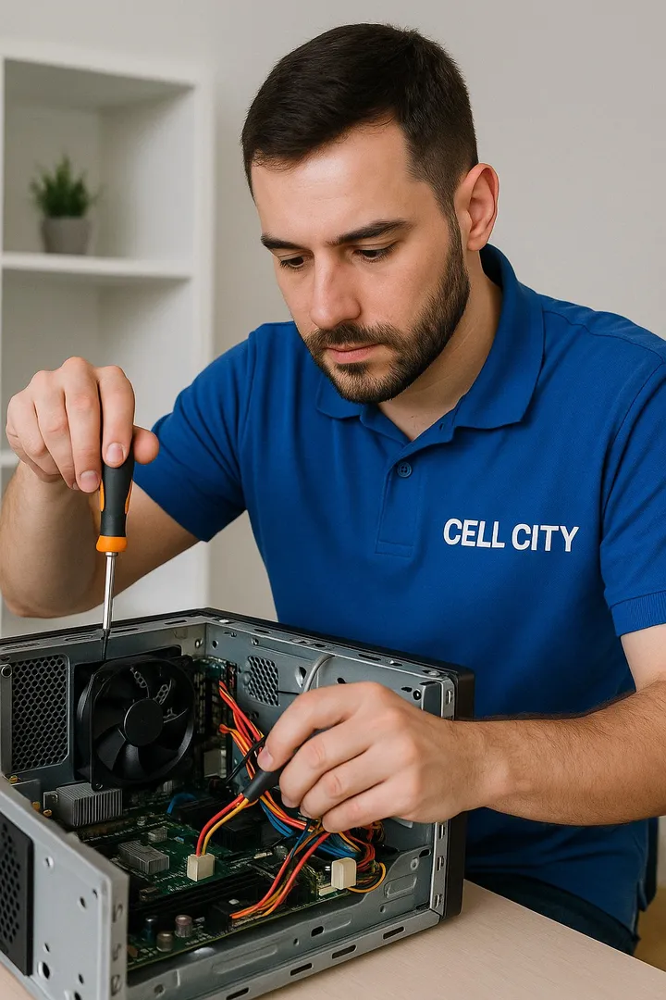

Bem-vindo!
Cell City Informática
Formatamos seu computador com Windows e Office instalados – tudo pronto para uso!

Manutenção Profissional de Computadores
- Formatação completa com backup de segurança
- Remoção de vírus, malwares e propagandas
- Instalação de Windows original e drivers atualizados
- Troca de HD, SSD, memória RAM e fonte
- Limpeza interna e melhoria no desempenho do sistema
- Mais de 20 anos de experiência em informática técnica